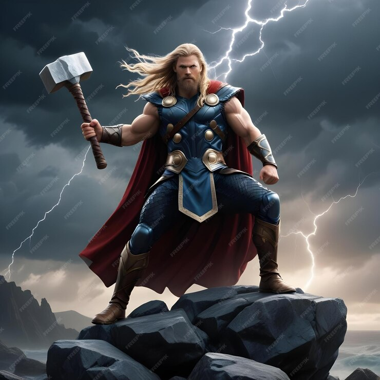
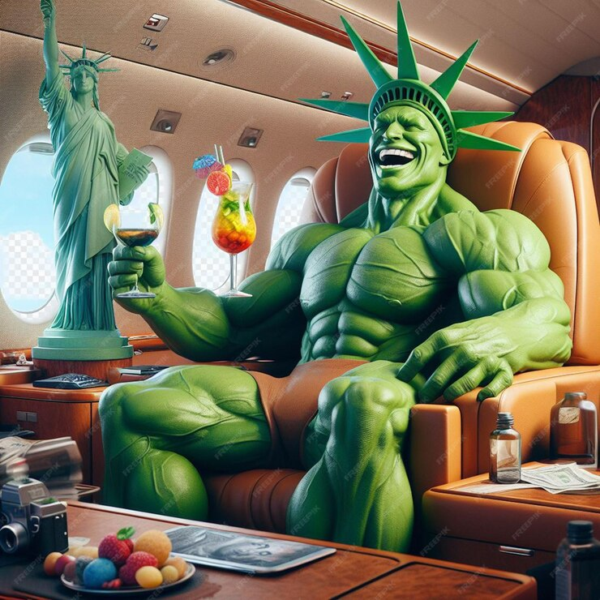

Avengers

Captain America

Captain America is a superhero created by Joe Simon and Jack Kirby who appears in American comic books published by Marvel Comics. Captain America's civilian identity is Steven "Steve" Rogers, a frail man enhanced to the peak of human physical perfection by an experimental "super-soldier serum" after joining the United States Army to aid the country's efforts in World War II.
Know more about Captain America
Iron Man

Iron Man is the superhero persona of Anthony Edward "Tony" Stark, a businessman and engineer who runs the weapons manufacturing company Stark Industries. When Stark was captured in a war zone and sustained a severe heart wound, he built his Iron Man armor and escaped his captors. Iron Man's suits of armor grant him superhuman strength, flight, energy projection, and other abilities.
Know more about Iron Man
Thor

In 965 AD, Odin, king of Asgard, wages war against the Frost Giants of Jotunheim and their leader Laufey, to prevent them from conquering the Nine Realms, starting with Earth. The Asgardians defeat the Frost Giants and seize the source of their power, the Casket of Ancient Winters.
Know more about Thor
Hulk

Dr. Robert Bruce Banner is a renowned scientist, physicist, and medical doctor with seven Ph.D.s. While working at Culver University, Virginia, Banner meets with General Thaddeus Ross, the father of his colleague and girlfriend Betty, regarding an experiment that Ross claims is meant to make humans immune to gamma radiation, a field in which Banner is an expert. The experiment — part of the World War II-era supersoldier program that Ross hopes to recreate — fails, and the exposure to the gamma radiation causes Banner to transform into the Hulk for the first time. The Hulk goes on a rampage, destroying the lab, killing three people and injuring several others. Banner subsequently becomes a fugitive from the U.S. military and Ross in particular, who wants to weaponize the Hulk process.
Know more about Hulk
Spiderman

Spider-Man has the secret identity of Peter Benjamin Parker. Initially, Peter was depicted as a teenage high-school student and an orphan raised by his Aunt May and Uncle Ben in New York City after his parents, Richard and Mary Parker, died in a plane crash. Lee, Ditko, and later creators had the character deal with the struggles of adolescence and young adulthood.
Know more about Spider Man